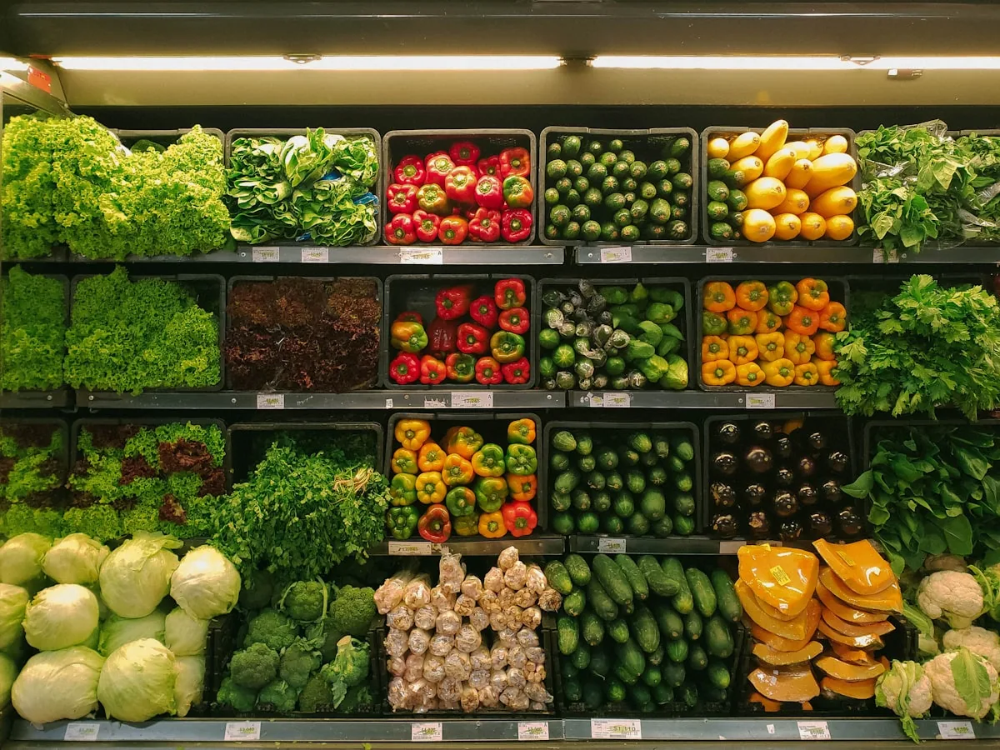
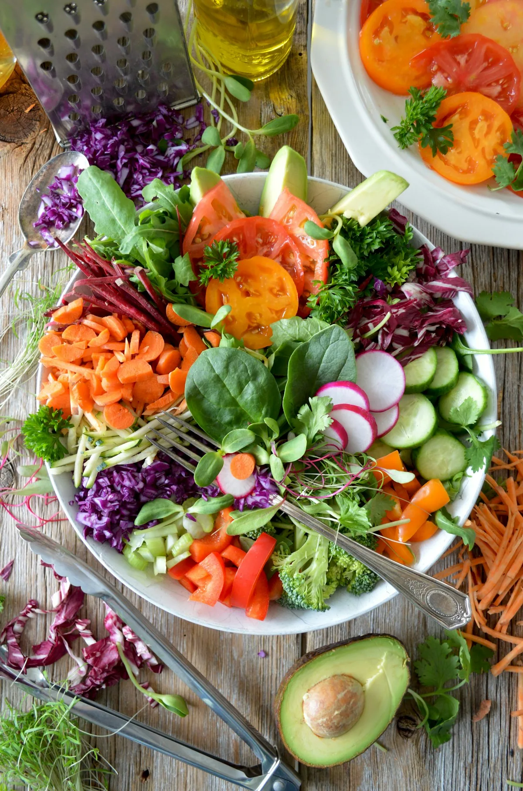
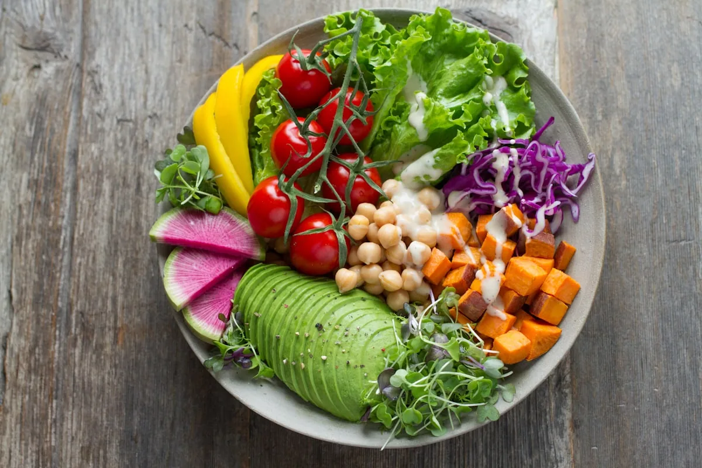

Seleção diária
Produtos escolhidos com atenção antes de chegarem às nossas bancas.

HORTIFRUTI · FRESCOR · QUALIDADE
Frutas, verduras e alimentos selecionados para fazer parte da sua rotina todos os dias.
FRESCO TODOS OS DIAS VERDE · NATURAL · SELECIONADO
Tente novamente mais tarde. Você pode continuar conhecendo o site.
A NOSSA ESCOLHA
Cada escolha começa com um cuidado simples: alimentos bonitos, bem conservados e prontos para a sua mesa. Seleção atenta, variedade e uma organização que torna a compra mais leve.
Conheça nosso cuidado
ENCONTRE O SEU FRESCOR
Inspirações para o dia a dia. Consulte os produtos e a disponibilidade no catálogo.
CUIDADO EM CADA ESCOLHA
Cuidado na escolha, leveza no ambiente e produtos que fazem diferença nas pequenas rotinas.
Produtos escolhidos com atenção antes de chegarem às nossas bancas.
Rotatividade e cuidado para preservar o que a natureza oferece de melhor.
Opções para a feira da semana, a receita de hoje e novas descobertas.
Uma experiência acolhedora, prática e fácil de resolver.
DO CAMPO À ROTINA
Produtos escolhidos com atenção à qualidade.
Um ambiente cuidado e fácil de comprar.
Rotatividade e cuidado com os alimentos.
Uma experiência simples para encontrar o que precisa.
PARA A SUA ROTINA
Uma escolha que começa no olhar e continua em cada refeição.
Conferir opções

AVALIAÇÕES FICTÍCIAS · EXEMPLO DO MODELO
“A organização faz toda diferença. Dá vontade de levar tudo, porque está sempre bonito e fresco.”
“Encontro o que preciso para a semana sem perder tempo. A qualidade é muito consistente.”
“As frutas e as folhas chegam lindas em casa. Virou uma parada certa na minha rotina.”
DÚVIDAS FREQUENTES
Abra o catálogo para conhecer as opções disponíveis no momento.
Os preços e as descrições atualizados acompanham cada produto no catálogo.
Confira as descrições disponíveis no catálogo e confirme as informações com o estabelecimento antes de concluir seu pedido.
As informações de atendimento cadastradas pelo estabelecimento aparecem no catálogo.
Abra o catálogo, escolha os produtos e monte seu carrinho. Quando os pedidos estiverem habilitados, use o botão de WhatsApp do próprio catálogo para continuar.
Verde Viva
Conheça as opções disponíveis e encontre mais sabor para o seu dia a dia.